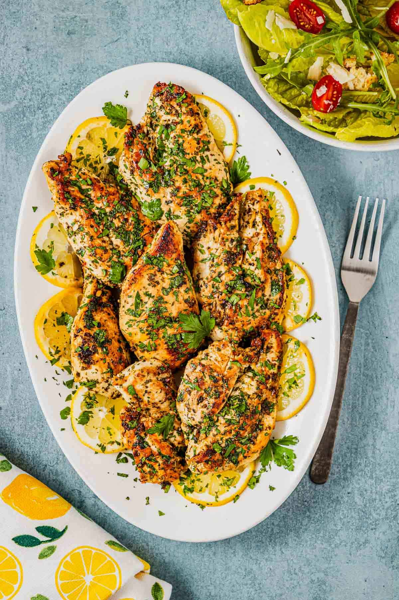

Lemon Garlic Chicken

Learn how to cook chicken breasts on the stove with this easy lemon garlic chicken recipe! A vibrant citrus marinade with a little red pepper for a slight spicy kick, creates tender, juicy, and flavorful chicken breasts. Cooks in 15 minutes!
5large garlic cloves crushed or minced2lemons¼ cupolive oil1½ tspitalian seasoning½ tspred pepper flakes (optional)¼ cupchopped Italian parsley, plus more for garnish2 lbboneless skinless chicken breasts (about 4 large chicken breasts)- salt and pepper to taste
Make the marinade: Zest and juice one of the lemons into a large bowl (save the other lemon for later). To the bowl, add olive oil, garlic, Italian seasoning, red pepper flakes, and parsley and whisk to combine. Set aside.
Slice the breasts into cutlets (putting them in the freeze for 1-2 hours will make this easier): Place the chicken breast flat on a cutting board and position your non-dominant hand on top to hold it firmly. Using a sharp knife in your dominant hand, carefully slice the chicken breast horizontally starting with the thicker end and all the way through to the thin end. You should end up with two thin cutlets for each chicken breast. If the cutlets still need to flatten a bit, cover with plastic wrap and pound with a kitchen mallet (optional).
Dry and season the chicken: Use a paper towel to pat the chicken dry. Season with a big pinch of kosher salt and black pepper on both sides. Add the chicken to the marinade and turn to coat. Cover the bowl and place in the fridge for 30 minutes and up to 2 hours.
Cook the chicken: In a large cast iron skillet set over medium heat, add 2 tablespoons of olive oil. Once the oil begins to shimmer, arrange the chicken pieces in the skillet. Do this in batches if you need to, as you do not want to crowd the pan. Sear for about 4 minutes on each side, or until both sides are golden brown and the chicken is nearly cooked through. (Its juices should run clear.)
Rest: When the internal temperature reaches 160℉, remove from the heat. Tent with foil and let the chicken rest for another 5 minutes. The chicken will come up to 165℉ while it’s under the foil. There should be no pink on the inside. While it rests, slice the remaining lemon.
Garnish and serve: Garnish the chicken with chopped parsley and lemon slices. Serve.